금속재료산업기사 (2007-03-04 기출문제)
1과목: 금속재료
1. 영구자석으로 많이 이용되는 MK강(알니코 : alnico)의 주요 합금원소는 Fe 에 Al - Ni 그리고 어떤 원소가 첨가 되는가?
- Mn
- Cr
- W
- Co
(정답률: 61%)

2. 주철을 600℃ 이상의 온도에서 가열 및 냉각조작을 반복하면 점차 부피가 커지며 변형되고 균열발생 및 수명이 단축되는 현상을 무엇이라 하는가?
- 구상화
- 주철의 성장
- 탄소의 당량
- 감쇠성
(정답률: 39%)
3. 다음 중 반도체 재료의 정제법이 아닌 것은?
- 대역 정제법
- 플로팅존법
- 벨크 단결정의 제작법
- 분사 분산법
(정답률: 55%)
4. 탄소강 중에 함유된 성분 원소로 Fe와 화합하여 고온 취성(hot shor tness)의 원인이 되고 Fe 와 공정을 만들어 입계에 망상으로 분포되므로 인장력, 충격치를 감소시키는 원소는?
- Mn
- Cu
- P
- S
(정답률: 64%)
5. 진공 또는 CO의 환원 분위기에서 용해 주조한 것으로 진공관의 구리선 또는 전자기기용으로 사용되는 것은?
- 전로동
- 제련동
- 무상소동
- 강인동
(정답률: 48%)
6. 금속재료를 열간가공 하였을 때의 장점으로 틀린 것은?
- 수지상 결정이 파괴된다.
- 조직이 치밀하게 된다.
- 강도나 연성이 향상된다.
- 냉간가공에 비해 제품의 표면이 미려하고 치수가 정밀하다.
(정답률: 53%)
7. 철(Fe)의 동소변태에 관한 설명으로 틀린 것은?
- 일정온도에서 급격히 비연속으로 일어난다.
- 동일 물질에서 원자배열의 변화로 생긴다.
- 철의 동소변태는 A3 와 A4 이며 가역적이다.
- 동소변태에서 변태점 가열시에는 r(A3) 로 나타내고, 냉각시에는 c(AC3)로 나타낸다.
(정답률: 44%)
8. 구상흑연주철의 흑연구상화제로 가장 많이 사용되는 것은?
- Mg, Ca 계 합금
- P, Co 계 합금
- Cu, Pb 계 합금
- Mn, P 계 합금
(정답률: 56%)
9. 다음 중 소결초경질 공구강의 금속 탄화물이 아닌 것은?
- WC
- GC
- TiC
- TaC
(정답률: 68%)
10. 어느 방향으로 소성변형을 가한 재료에 역방향의 하중을 가할 경우 소성변형에 대한 저항이 감소하는 효과는?
- 바우싱거 효과
- 코트렐 효과
- 슬립 효과
- 지벡효과
(정답률: 55%)
11. 18-8 스테인리스강에 대한 설명으로 틀린 것은?
- 18%Cr, 8%Ni 의 조성을 갖는다.
- 오스테나이트계로 비자성체이다.
- 내식성이 우수하고 기계적 성질이 양호하다.
- 용접성 향상을 위해 S(황)을 첨가하는 것이 필수적이다.
(정답률: 65%)
12. 다음 중 비중이 가장 큰 원소는?
- Fe
- Al
- Cu
- Ir
(정답률: 74%)
13. 제진합금의 함금명이 아닌 것은?
- 소노스톤
- 사이렌탈로이
- 인크라무트
- 화이트메탈
(정답률: 53%)
14. 용융온도(melting point)가 가장 높은 금속은?
- W
- Ni
- Fe
- Al
(정답률: 71%)
15. 균일한 조직으로 된 합금속에 처음에 응고한 부분과 나중에 응고한 부분에서 농도차가 생기는 현상은?
- 공석
- 포석
- 편정
- 편석
(정답률: 56%)
16. 청동의 성질을 설명한 것 중 틀린 것은?
- 경도는 Sn 30% 가 첨가되었을 때 최소가 된다.
- 인장강도는 Sn 17~18%가 첨가되었을 때 최대가 된다.
- 일반적으로 대기 중에서 내식성이 우수하다.
- 비중은 순동이나 Sn 20% 가 첨가된 경우에나 거의 변화하지 않는다.
(정답률: 30%)
17. 다음 중 분말야금의 특징을 설명한 것 중 틀린 것은?
- 절삭공정을 생략할 수 있다.
- 다공질재료의 제조가 가능하다.
- 서로 용해하여 융합하지 않는 합금의 제조는 불가능 하다.
- 고융점 금속부품 제조에 적합하다.
(정답률: 66%)
18. 황동의 화학적 성질 중 탈아연부식(dezincification)에 대한 설명으로 틀린 것은?
- 염소를 함유한 물을 쓰는 수관에서 볼 수 있다.
- 탈아연부식을 막으려면 Zn 만 10% 이하의 B 황동을 사용한다.
- 탈아연된 부분은 다공질이 되어 강도가 낮아진다.
- 불순한 물이나 부식성 물질이 존재하는 수용액의 작용에 의해 황동표면이나 깊은 곳까지 탈아연 된다.
(정답률: 40%)
19. 다이캐스팅용 알루미늄합금에서 요구되는 성질로 틀린 것은?
- 유동성이 작으면서 흐름의 중간이 끊어질 것
- 열간취성이 적을 것
- 금형에 점착되지 않을 것
- 응고수축에 대한 용탕 보급이 좋을 것
(정답률: 75%)
20. 그림은 어떤 재료를 인장시험하여 항복 구역까지 소성변형 시킨 후 하중을 제거 했을 때의 응력-변형곡선을 나타낸 것이다. 이에 해당되는 재료로 옳은 것은?
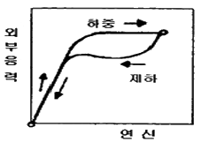
- 수소저장합금
- 탄소공구강
- 초탄성합금
- 형상기억합금
(정답률: 65%)
2과목: 금속조직
21. 순금속 중에 동종의 원자사이에서 일어나는 확산은?
- 상호확산
- 불순물확산
- 자기확산
- 반응확산
(정답률: 61%)
22. 다음 그림에서 F가 가르키는 방향의 밀러지수로 옳은 것은?
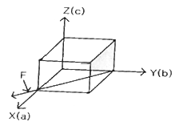
- [0
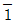
1] - [01
 ]
] - [111]
- [1
 0]
0]
(정답률: 55%)
23. 금속의 강화기구 중 결정립의 크기와 강도와의 관계에 대한 설명으로 틀린 것은?
- 결정립의 크기가 클수록 강도는 증가한다.
- 결정립계의 면적이 클수록 강도는 증가한다.
- 재료의 항복강도와 결정립의 크기 관계를 Hall-Petch식으로 한다.
- 결정립이 미세할수록 항복강도 뿐만 아니라 피로강도 및 인성이 증가된다.
(정답률: 47%)
24. 다음 그림은 어떤 형의 상태도인가?
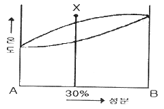
- 편정형
- 공정형
- 고용체형
- 포정형
(정답률: 50%)
25. 치환형 고용체에서 원자의 규칙도와 온도와의 관계를 가장 올바르게 설명한 것은?
- 규칙도는 온도에 무관하다.
- 온도가 상승하면 규칙상태로 된다.
- 온도가 상승하면 불규칙 상태로 된다.
- 온도가 상승하면 규칙상태로 될 수 있고 불규칙 상태로 되는 경우도 있다.
(정답률: 53%)
26. Bragg의 X 선 회절식에서 면간거리 d 는? (단, d : 면간거리, λ : X 선 파장, n : 정정수, θ : X 선 조사각)
- 2 / nλsinθ
- 2nλ / sinθ
- 2nλsinθ / 2
- nλ / 2sinθ
(정답률: 40%)
27. 다음 중 하이필드(Hadfield) 강의 조직은?
- 페라이트
- 소르바이트
- 마텐자이트
- 오스테나이트
(정답률: 41%)
28. 인장전위는 용질원자의 분위기에서 형성된 응력장이 완화되어 안정상태로 움직임이 어려운 현상이 된다. 이 때 용질원자와 인장전위의 상호 작용을 무엇이라 하는가?
- 분위기 효과(Atmosphere effect)
- 전위의 상승 효과(Climbing effect)
- 고착작용 효과(Locking anchoring effect)
- 코트렐 효과(Cottrel effect)
(정답률: 59%)
29. 임계전단응력은
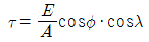
로 표현된다. 이 중 Schmid 인자는?- A
- cosø · cosλ
- F / A
- A
(정답률: 65%)
30. 다음 중 강자성체로 사용되는 3원합금은?
- Fe-Co-Ni
- Fe-Cu-Si계 합금
- Fe-S-Mn 계 합금
- Fe-Cu-Mn계 합금
(정답률: 47%)
31. 다음 중 금속간화합물에 대한 설명으로 틀린 것은?
- 단단하고 취약하다.
- 구성 성분금속의 특성은 소실하다.
- 단일성분의 온도에 의한 격자변화이다.
- 일반적으로 성분금속보다 융점이 높다.
(정답률: 40%)
32. 다음 x 선 합금 속에 A 는 몇 % 가 함유되어 있는가?
- 30%
- 50%
- 70%
- 90%
(정답률: 45%)
33. 금속의 쌍정 변형(twin deformation)과 킹크 변형(kink deformation) 대한 설명 중 틀린 것은?
- 쌍정형성의 특징은 원자의 전단적 이도에 의해서 형성된다.
- 킹크 밴드를 형성하는 금속은 Cd와 Zn 등이 있다.
- 특정의 편면을 경계로 하여 처음의 결정와 경면 대칭의 원자배역을 가지는 결정을 쌍정이라 한다.
- 체심 입방정을 갖는 금속을 슬립면에 수평으로 압축하면 슬립이 일어나기 쉬워 변형이 생긴 부위를 킹크변형이라 한다.
(정답률: 38%)
34. Cu-Ni 합금에서 최대의 강도를 나타내는 Ni 의 함량은?
- 10%
- 40%
- 60%
- 80%
(정답률: 35%)
35. 상온에서 취약하며 전연성이 작은 조밀육방격자로 구성된 원소는?
- W, Mo, Cs
- Mg, Zn, Zr
- V, Ta, Cr
- Pt, Cu, Ag
(정답률: 61%)
36. 3원합금의 공간관계 그림에서 삼각형 PQR 내에 두 개의 지렛대 POS, QSR을 이용하여 합금의 0중의 P, S, R의 양을 구하는 식으로 틀린 것은?
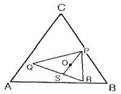
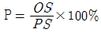
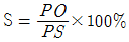
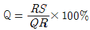
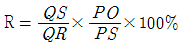
(정답률: 26%)
37. 금속의 변태점 측정방법 중 시료와 중성체를 전기로에 넣고 열변화를 확대하여 측정하는 방법은?
- 수냉분석법
- 열팽창법
- 전기저항법
- 시차열분석법
(정답률: 38%)
38. 다음 중 금속결정의 소성변형과 밀접한 관계로 선을 다라 결정 내에 존재하는 결함은?
- 전위
- 원자공공
- 크로디온
- 적층결함
(정답률: 63%)
39. 금속의 결정구조에서 면심입방격자의 배위수는?
- 3개
- 6개
- 12개
- 24개
(정답률: 64%)
40. 다음 중 공정 조직으로 옳은 것은?
- 시멘타이트
- 펄라이트
- 페라이트
- 레데뷰라이트
(정답률: 47%)
3과목: 금속열처리
41. 고체침탄을 899℃에서 4시간 실시하였을 때 F.E Harris 식에 의한 침탄층의 깊이는? (단, 이 때 확산 정수 K 는 0.533)
- 0.267
- 1.066
- 2.132
- 3.066
(정답률: 48%)
42. Al 합금의 질변 기호 중 용체화 처리 상태를 나타내는 것은?
- O
- W
- Y
- T
(정답률: 50%)
43. 고속도강이나 스테인리스강 등의 열처리에 사용하는 염욕 설비로 가장 적합한 것은?
- 저온용 염욕로
- 중온용 염욕로
- 고온욕 염욕로
- 표면 경화용 염욕로
(정답률: 54%)
44. 열처리과정에서 나타나는 조직 중에서 부피의 변화가 가장 큰 것은?
- 오스테나이트(Austenite)
- 펄라이트(Pearlite)
- 베이나이트(Bainite)
- 마텐자이트(Martensite)
(정답률: 71%)
45. 강의 열처리시 뜨임의 목적이 아닌 것은?
- 조직의 불안정성을 제거한다.
- 강의 경화를 부여한다.
- 조직 및 기계적 성질을 안정화한다.
- 담금질에 의해 강 내부에 발생한 내부응력을 제거한다.
(정답률: 64%)
46. 마텐자이트(martensite) 변태를 설명한 것 중 틀린 것은?
- 무확산 변태이다.
- 강의 담금질 조직으로 경도가 크다.
- a 철 내에 탄소가 과포화 상태로 고용된 조직이다.
- 마텐자이트의 형성은 변태 시간에 관계하고, Ms 온도 이하로의 온도 상승량에 따라서만 결정된다.
(정답률: 58%)
47. 담금질 균열의 방지대책에 대한 설명 중 틀린 것은?
- Ms~Mf 범위에서 될수록 급냉을 한다.
- 살두께의 차이와 급변을 가급적 줄인다.
- 시간 담금질을 채용하거나 날카로운 모서리 부분을 라운딩(R) 처리하여 준다.
- 냉각시 온도의 불균일을 적게 하고, 되도록 변태도 동시에 일어나게 한다.
(정답률: 57%)
48. 회주철의 노멀라이징에 대한 설명 중 틀린 것은?
- 온도 범위는 약 880~930℃ 이다.
- 온도가 높을수록 조직이 단단해지고 강해진다.
- 최대 단면 두께 25mm 당 약 10분간 유지하고 상온으로 수냉한다.
- 노멀라이징은 경도와 인장강도 등의 성질을 개선하고 변화된 주조 상태의 성질을 회복시킨다.
(정답률: 37%)
49. 분말 아연 또는 이것을 함유한 혼합 분말 속에서 철강을 가열하여 그 표면에 아연(Zn)을 확산시켜 내식성 피막을 만드는 조작은?
- 세라다이징
- 보로나이징
- 칼로라이징
- 크로마이징
(정답률: 62%)
50. 이온 플레이딩(ion plating)법의 설명으로 틀린 것은?
- 진공 용기 내에서 금속을 증발시키고 글로우 방전에 의거 이온화를 촉진한다.
- 코팅 온도가 높으므로 기판을 변형시킨다.
- 피막과 기판과의 밀착성 및 피막의 치밀성이 양호하다.
- TiN, TiC, CrN, CrC, Al2O3, SiO2 등의 특이한 화합물 층을 얻을 수 있다.
(정답률: 49%)
51. Al-Cu 합금에서 과포화된 고용체로부터 온도가 증가함에 따라 석출물이 연속적으로 발달한다. 발달 순서로 옳은 것은?
- GP 영역 → θ″ → θ′ → (CuAl2)
- (CuAl2) → θ″ → GP 영역 → θ′
- GP 영역 → (CuAl2) → θ″ → θ′
- θ′ → θ″ → GP 영역 → (CuAl2)
(정답률: 32%)
52. 대형의 제품을 담금질하였을 대 재료의 내, 외부는 담금질 효과가 달라져 경도의 편차가 나타나는 현상은?
- 노치 효과
- 담금질 변형
- 질량 효과
- 가공경화 효과
(정답률: 58%)
53. 펄라이트(pearllite) 가단 주철의 제조 방법으로 틀린 것은?
- Ms 점에서 급냉 처리하는 방법
- 열처리 곡선의 변화에 의한 방법
- 흑심 가단 주철의 재열처리에 의한 방법
- 합금 첨가에 의한 방법
(정답률: 49%)
54. 특수표면처리 방법 중 강재 표면에 엷은 황화층을 형성 시키는 방법으로 주로 마찰저항을 적게 하여 윤활성을 향상시키는 효과가 있는 처리법은?
- 침황처리
- 침붕처리
- 염욕코팅처리
- 산화피막처리
(정답률: 42%)
55. 다음 중 Sub-Zero 처리시 조직의 변화로 옳은 것은?
- 잔류 Austenite → Troostite
- Martensite → Sorbite
- 안정 Troostite → Martenstie
- 잔류 Austenite → Martenstie
(정답률: 59%)
56. 침탄 담금질시 박리가 생기는 원인이 아닌 것은?
- 반복 침탄할 때
- 원재료가 너무 연할 때
- 침탄 후 확산처리 할 때
- 과잉침탄으로 C% 가 너무 많을 때
(정답률: 53%)
57. 연소용 가스버너를 내열 강관 속에 붙여, 라디안트(radiant) 튜브에 의한 열처리품을 가열하는 방식의 로는?
- 오븐로
- 머플로
- 원통로
- 복사관로
(정답률: 55%)
58. 강괴 등을 냉각제 속에 넣었을 때 냉각의 단계순서로 바르게 나열된 것은?
- 비등단계 → 증기막단계 → 대류단계
- 대류단계 → 비등단계 → 증기막단계
- 증기막단계 → 비등단계 → 대류단계
- 대류단계 → 증기막단계 → 0-pi비등단계
(정답률: 61%)
59. 열처리시에 사용되는 온도계는 접축식과 비접촉식으로 나눌 수 있다. 다음 중 접촉식이 아닌 것은?
- 열전온도계
- 광고온계
- 저항온도계
- 압력온도계
(정답률: 55%)
60. 고속도공구강의 담금질 온도가 상승함에 따른 강의 성질 변화를 설명한 것 중 틀린 것은?
- 탄화물의 고용량이 증대하여 기지 중 합금원소 증가
- 오스테나이트 결정립의 조대화
- 잔류 오스테나이트 양의 증가
- 충격값, 항절력, 인성 등의 증가
(정답률: 35%)
4과목: 재료시험
61. 비틀림 시험(torsion)에서 측정할 수 없는 것은?
- 강성계수
- 비틀림 강도
- 비틀림 파단계수
- 프와송 비
(정답률: 53%)
62. 금속 조직량의 측정법이 아닌 것은?
- 절단 측정법
- 면적 측정법
- 직선 측정법
- 점의 측정법
(정답률: 59%)
63. 냉간 압연한 후 기계적 특성 시험을 하였다. 다음 중 감소하는 기계적 특성은?
- 경도
- 연신율
- 인장강도
- 항복강도
(정답률: 61%)
64. 피로시험에서 S-N 은 각각 무엇을 나타내는가?
- 응력과 변형
- 응력과 반복횟수
- 반복횟수와 시험기간
- 반복횟수와 변형
(정답률: 61%)
65. 크리프(creep)곡선의 현상 중 속도가 대략 일정하게 진행되는(정상 크리프) 단계는?
- 제1단계
- 제2단계
- 제3단계
- 제4단계
(정답률: 62%)
66. 무색, 무미, 무취로서 연료의 불완전 연소로 인하여 생성되는 것으로 해로운 가스는?
- CO
- SO2
- NH4
- N2
(정답률: 65%)
67. 초음파 중에서 강속을 통과하는 종파의 속도는?
- 340m/s
- 1430m/s
- 3230m/s
- 5900m/s
(정답률: 39%)
68. 100배의 현미경 배율로 1평방인치 내의 결정립 수를 측정하였더니 결정립의 평균수가 128개 이다. 이때 ASTM 결정입도 번호는?
- 4
- 6
- 8
- 10
(정답률: 50%)
69. 다음 중 경도를 측정하기 위한 방법이 아닌 것은?
- 압입에 의한 방법
- 긋기(스크래치)에 의한 방법
- 반발에 의한 방법
- 프레스 성형에 의한 방법
(정답률: 48%)
70. 다음 중 침투탐상검사의 기본 작업 순서로 옳은 것은?
- 관찰→후처리→침투처리→세척처리→현상처리→전처리
- 관찰→세척처리→침투처리→현상처리→전처리→후처리
- 전처리→현상처리→세척처리→침투처리→관찰→후처리
- 전처리→침투처리→세척처리→현상처리→관찰→후처리
(정답률: 59%)
71. 시험체의 구멍을 통과시킨 자성체에 교류 자속을 가함으로서 시험체에 유도 전류를 보내는 방법으로 선형자계를 형성하며 관 및 관 이음매에 작용하는 자화방법은?
- 코일법
- 극간법
- 직각통전법
- 자속 관통법
(정답률: 39%)
72. 연성 판재를 가압 성형하여 변형 능력을 알아보기 위한 시험 방법은?
- 피로시험
- 충격시험
- 크리프시험
- 에릭션시험
(정답률: 56%)
73. 방사선투과검사에서 사진의 농도(D)를 나타내는 식으로 옳은 것은? (단, Lo : 필름에 입사한 빛의 강도, L : 필름을 투과한 후의 빛의 강도)
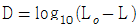
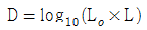
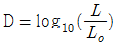
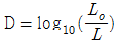
(정답률: 34%)
74. 시편의 시험전의 단면적이 55mm2 이었던 것이 인장시험 후에 측정한 결과 단면적이 32mm2 로 되었다면, 이 때 시편의 단면 수축률은 약 얼마인가?
- 4.18%
- 41.8%
- 6.18%
- 61.8%
(정답률: 41%)
75. 금속현미경 조직사진의 배율 표시방법으로 사진의 하단에 길이 1cm 의 선위에 20㎛의 스케일 표시가 되어있을 경우의 배율은?
- 200배
- 300배
- 400배
- 500배
(정답률: 23%)
76. 임의로 하중을 변화시킬 수 있어서 단단한 재료와 연한 재료의 흑정이 가능하고 침탄 질화층을 정확하게 측정할 수 있는 특징을 가진 경도계로서 가장 적합한 것은?
- 쇼어 경도계
- 로크웰 경도계
- 비커스 경도계
- 브리넬 경도계
(정답률: 30%)
77. 현미경 조직검사의 순서로 옳은 것은?
- 시험편 채취→시험편의 제작→부식→연마→검경
- 시험편 채취→연마→시험편의 제작→부식→검경
- 시험편 채취→부식→시험편의 제작→연마→검경
- 시험편 채취→시험편의 제작→연마→부식→검경
(정답률: 49%)
78. 다음 중 와전류탐상시험의 장점이 아닌 것은?
- 표면결함의 검출에 적합하다.
- 고온 부위의 시험페에도 탐상이 가능하다.
- 시험체의 비접촉으로 탐상이 가능하다.
- 형상이 복잡한 제품의 검사에 적합하다.
(정답률: 44%)
79. 위험예지 훈련의 4단계 순서로 옳은 것은?
- 제1단계(현상파악)-제2단계(본질추구)-제3단계(목표달성)-제4단계(대책수립)
- 제1단계(현상파악)-제2단계(본질추구)-제3단계(대책수립)-제4단계(목표달성)
- 제1단계(목표달성)-제2단계(현상파악)-제3단계(본질추구)-제4단계(현상파악)
- 제1단계(본질추구)-제2단계(현상파악)-제3단계(대책수립)-제4단계(목표달성)
(정답률: 72%)
80. 브리넬 경도가 보기와 같이 표현되었을 때 이에 따른 설명으로 틀린 것은?
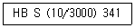
- HB : 압입자의 종류
- 10 : 압입자의 직경(mm)
- 3000 : 시험 하중(kg)
- 341 : 브리넬 경도값
(정답률: 41%)